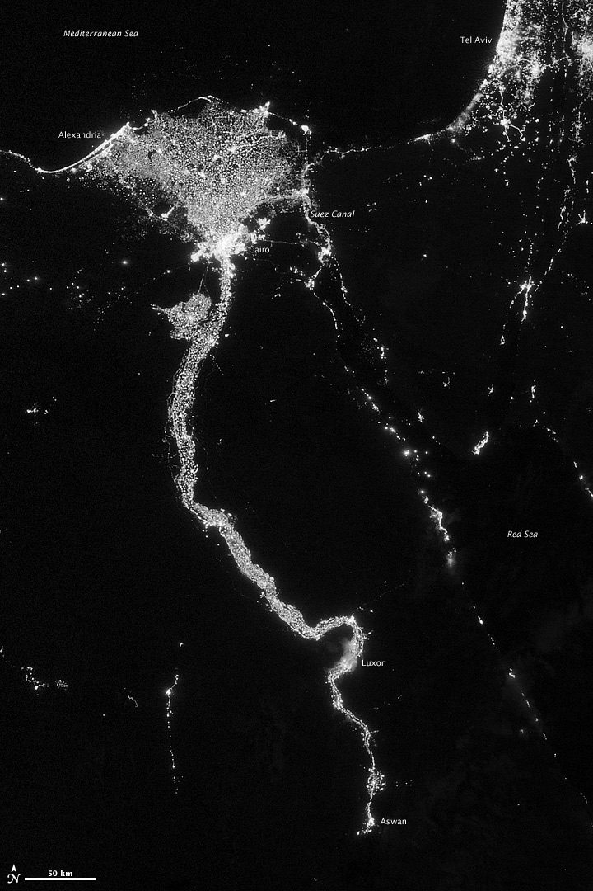

The missions we help make succeed.
SSAI does not own the spacecraft — NASA, NOAA, and their primes do. What we bring is the engineering, integration and test, mission operations, and data discipline that carries a mission from a study concept to trusted science. Across nearly fifty years and more than 150 Earth and space science missions, our people have filled the seats that decide whether a mission works.
Verbs we can stand behind.
Every mission below is grouped into one of two families — Earth-observing, and exploration & astrophysics. For each, we name what the mission does, the one role SSAI plays, and where the mission stands today. We frame that role in honest terms: SSAI supports, engineers, integrates and tests, operates, and turns into data. We do not build or own the flight hardware.
That distinction matters. A satellite belongs to the agency and its prime contractor. The engineering rigor that gets an instrument to orbit, the operations teams that keep it healthy, and the data pipelines that convert raw signal into trusted measurement — those are the contributions SSAI makes, mission after mission.
Earth-observing missions.
The largest part of our work. These missions watch the ocean, the atmosphere, the ice, and the land — measuring color, air quality, height, heat, and ozone. SSAI engineers their sensors, operates their data archives, and runs the modeling and assimilation that turns observations into a continuous record of the planet.
 NASA/Goddard Space Flight Center
NASA/Goddard Space Flight Center
PACE
Plankton, Aerosol, Cloud, ocean Ecosystem — measures ocean color, aerosols, and clouds to track the health of the seas and the air above them.
SSAI role: Led electrical engineering on the Ocean Color Instrument (OCI).
On-orbitTEMPO
Tropospheric Emissions: Monitoring of Pollution — the first space mission to measure air quality over North America hour by hour, from geostationary orbit.
SSAI role: Operates the data pipeline at the ASDC DAAC at NASA Langley.
On-orbitICESat-2
Measures the elevation of ice sheets, sea ice, forests, and land with a precision laser altimeter — tracking how the planet's ice and vegetation change over time.
SSAI role: Science data support and cal/val for elevation products.
On-orbitGOES-R Series
The GOES-R/S/T/U geostationary satellites watch storms, lightning, the Sun, and the solar wind — the backbone of U.S. operational weather forecasting.
SSAI role: Led instrument Integration & Test; supports operations at NOAA's Satellite Operations Facility.
On-orbit · operatingMERRA-2 / GEOS
A model–data fusion reanalysis providing a continuous atmospheric record since 1980, produced with NASA's GEOS modeling and assimilation system.
SSAI role: Contributed to MERRA-2, recognized with a 2019 NASA Agency Honor Award.
OperatingBlack Marble
NASA's daily, calibrated nighttime-lights product — revealing power outages, urban growth, and human activity from the glow of the Earth at night.
SSAI role: Science and data-product support for nightlight retrievals.
OperatingSAGE III
Stratospheric Aerosol and Gas Experiment III, aboard the International Space Station, profiles ozone, aerosols, and other gases in the stratosphere.
SSAI role: Built and operates the SAGE III Payload Operations Center (SPOC).
On-orbitOMI / OMPS
The Ozone Monitoring Instrument and Ozone Mapping and Profiler Suite — aboard Aura, Suomi-NPP, and NOAA-20 — track the ozone layer and atmospheric aerosols.
SSAI role: Pioneered direct-broadcast processing from raw sensor data to finished products.
On-orbitLandsat
The longest continuous record of Earth's land surface from space, anchored most recently by Landsat 9 and its Thermal Infrared Sensor-2 (TIRS-2).
SSAI role: Carried TIRS-2 through all phases — parts engineering, electronics, integration and test.
On-orbitA planet, measured day after day
Ocean blooms, hurricanes, dust storms, and city lights — the phenomena these missions watch are not abstractions. They are the living signals SSAI helps turn into a trusted, continuous record of the Earth.
 NASA (MODIS / NASA Goddard Space Flight Center)
NASA (MODIS / NASA Goddard Space Flight Center)
 NASA (ISS Expedition 9)
NASA (ISS Expedition 9)

NASA (Suomi NPP / VIIRS, NASA Goddard)Exploration & astrophysics.
The missions that reach furthest — to the Trojan asteroids, to the first galaxies, and into the high-energy X-ray sky. SSAI helps engineer their instruments, calibrate their detectors, and convert the faint light they gather into measurements science can trust.
The James Webb Space Telescope was assembled and tested in the world's largest clean room at NASA Goddard — next door to SSAI. Its 18-segment, gold-coated primary mirror gathers light that has traveled for nearly the whole age of the universe, and producing science from it demands extraordinary precision: every detector quirk characterized, every wavelength calibrated.
That unglamorous craft — calibration and validation, data pipelines, the patient turning of raw light into trustworthy measurement — is the work SSAI does across mission after mission. It is what lets a deep field become a catalog of the early universe rather than just a beautiful frame.
- Detector characterization and calibration of instrument data.
- Data systems and pipelines that turn raw frames into science products.
- Cal/val that lets distant, faint signals be trusted as measurements.
 NASA/Goddard Space Flight Center
NASA/Goddard Space Flight Center
JWST
The James Webb Space Telescope — the most powerful observatory ever flown, gathering infrared light from the first galaxies, exoplanet atmospheres, and stellar nurseries.
SSAI role: Calibration, data systems, and cal/val that turn Webb's frames into science.
On-orbitLucy
The first mission to the Trojan asteroids — ancient remnants of planet formation that share Jupiter's orbit around the Sun, surveyed across a twelve-year journey.
SSAI role: Science and engineering support for the mission's instrument data.
In flightRoman
The Nancy Grace Roman Space Telescope — a wide-field observatory built to survey dark energy, exoplanets, and the structure of the cosmos at Hubble resolution.
SSAI role: Led electrical engineering on the flagship Wide Field Instrument.
In developmentChandra
The Chandra X-ray Observatory has imaged the hottest, most violent objects in the sky for more than two decades — supernova remnants, black holes, and galaxy-cluster gas.
SSAI role: Calibration and data processing for high-energy observations.
On-orbitXRISM
The X-Ray Imaging and Spectroscopy Mission resolves the motion and composition of the universe's hottest gas in unprecedented detail with its Resolve spectrometer.
SSAI role: Electrical-engineering support on the soft X-ray spectrometer, Resolve.
On-orbitOne Discipline
Asteroids, the early universe, the X-ray sky — the destination changes, the discipline does not. The same engineering and data rigor carries every mission from first power-on to finished science.
Across the catalogFrom faint signal to catalog
Deep fields, supernova remnants, dying stars — the images these missions return are also datasets. Behind every frame lies the calibration and processing that lets distant, faint light be trusted as measurement.
 NASA, ESA, CSA, STScI (James Webb Space Telescope)
NASA, ESA, CSA, STScI (James Webb Space Telescope)
 NASA / Chandra X-ray Observatory (JPL)
NASA / Chandra X-ray Observatory (JPL)
Many missions, one rhythm
From low Earth orbit to the L1 Lagrange point and beyond, the missions SSAI supports trace their own paths through space — each on its own cadence, each returning a stream of data that must be received, processed, and trusted. Behind every orbit is a team keeping it healthy and turning its signal into science.
Missions that reach all the way to the ground
A mission only matters when its data reaches the people who can use it. Across the catalog, SSAI's work shows up in lives aided, classrooms reached, and records the world relies on.
From the mission to the science.
Every mission in this catalog flies an instrument SSAI helped engineer, integrate, and test — and produces a data stream SSAI helps operate and turn into science. To follow either thread, start with the instrument portfolio or the published research.
The instrument library shows what each sensor measures and the role SSAI played, from sensor to science. The publications record collects the peer-reviewed work these missions made possible — the honest, citable end of the catalog.